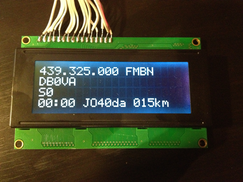

Recently the Arduino microcontroller has become famous for controlling rigs. When it comes to the Yaesu FT817 there exist controllers for satellite operation (VE9RQP), for loop antenna tuners (WW3WW) and for transverters (IZ0MJE). During the development of the xmlbandplan.org project I was in need of a hardware to play with some features. The idea of an Arduino controller library for the FT817 was born. Based upon the sources mentioned above and the Hamlib implementation for this rig I have created a library for controlling the FT817 from an Arduino (the sources are available on github). More details on the usage and installation of this library can be found in the source tree.

As the main focus was to play with the bandplan information I have also soldered a little bit (see hardware setup below) and wrote a piece of software (sources are in examples/ft_817_remote/) which uses the library. Once the CAT interface is connected to the serial pins it is easy to read out the frequency and from there it is straight forward now to display band and channel information. The corresponding data structures for band and channel information can be created automatically from the xmlbandplan files. Ready-to-use header files are contained in the repositiory.
In addition to the rig I have also connected a GPS receiver to one of the serial ports on the Arduino. Remark: Initially I have used an Arduino Uno for this experiment. It is not possible to use two SoftwareSerial ports at once: only one port can be active at a time. The Arduino Mega on the other hand provides enough hardware ports for my purpose. Now the GPS information can be merged: it is possible to display the current distance to the selected repeater (i.e. DB0VA in the image above) or even to create adaptive channel lists based on the position.
Feature List
In the current state of the experiment the following features have been realized:
-
Display
-
Frequency & mode
-
Channel & band name
-
Signal level
-
Maidenhead Locator & distance to repeater
-
-
Operating Modes
-
Watchdog (multiple channels)
-
Switch channels (using buttons & rotary encoders)
-
Gestures (frequency browsing, watchdog mode, …)
-
Scanning
-
Automatic mode selection based on channel
-
Hardware setup
-
Rotary Encoders
-
Pushbuttons
The wiring information can be found here and in this picture.
{kind=link}
Outlook
During the further development of the xmlbandplan.org project it became clear, that the complete band plan information (repeater lists etc) will use more storage, than the Arduino provides. Even though I have experimented with a SD card reader and thought about soldering some RAM my conclusion is, that for the upcoming development I need more power. Therefore I have switched to a Raspberry Pi :) Nevertheless I guess the FT817 controller library and probably even my example controller could be a good starting point for further experiments.